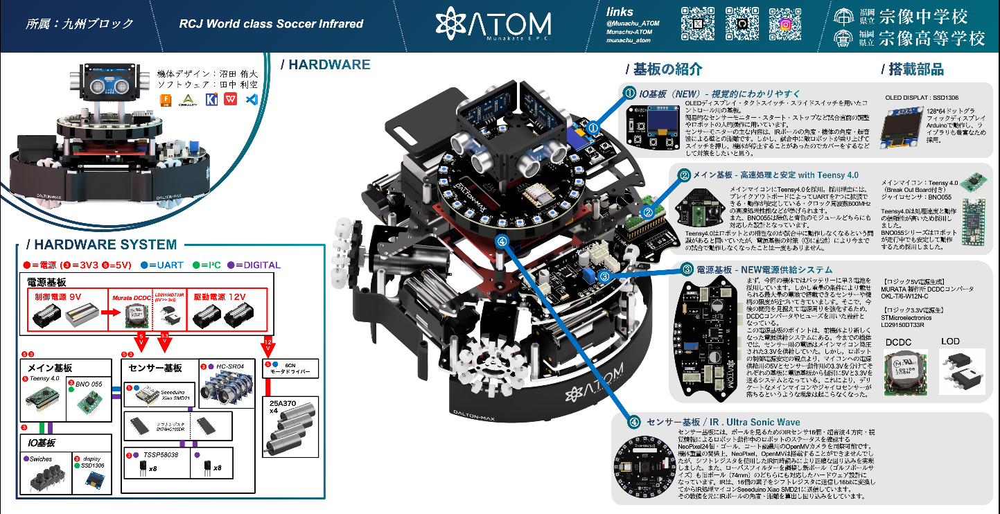

2026.08.11
【結果報告】北九州オープン2026
2026年8月8日から9日に北九州で開催されたロボカップジュニア北九州オープン大会で、ライトウェイト／リーグBの優勝を果たしました。
大会2日目にはビッグフィールド戦も行われ、そこでの勝利にも貢献することができました。
開発期間の都合から、IRセンサ・超音波センサ・ジャイロセンサという最低限の装備を載せた1機体で試合に臨みました。故障による失点は悔やまれますが、11月のノード大会に向けて改善を進めていきます。
これからの活動などはチームサイトのBlogやNEWS・SNSで発信していきますのでチェックしていただけると幸いです。
今大会の機体
以下の画像は今回の機体のハードウェアです

写真01：北九州オープン2026プレゼンシート（ハード）
では次の記事でお会いしましょう。さようなら